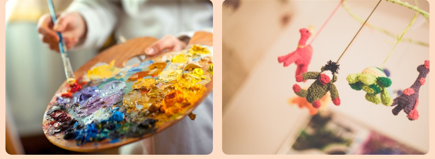
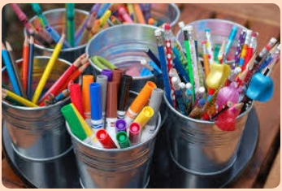

Arts, Crafts & Creativity
|  |
Share this page
|
|
Read my blog! |
Sign up for updates! |
YOU CAN PUT A SLOGAN, QUOTE OR WELCOME MESSAGE HERE |
|
Welcome, and thanks for choosing this template, which is a wonderful canvas suitable for all kinds of blog topics. This is the homepage. You can replace the text here with some text of your own. It can be a little welcome message for your website visitors, or an introduction to some of the things you'll be writing about on this blog. You can also choose to delete all the content on this page and start from scratch. Don't worry: you can always add new content to the page by clicking the Add Content button. |
 | |
|
Ready to work on another page? Just click on any of the pages in the menu above, or go to Pages. Questions? Just click on the ? icon. This is our little help section, which gives you short explanations on all of the main features of the website editor. Good luck, and we hope you have fun putting together your blog site! |
||